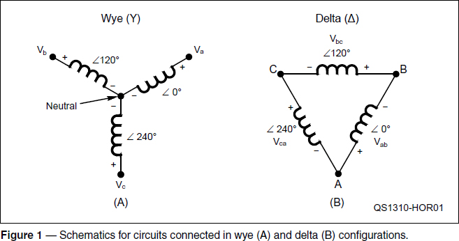
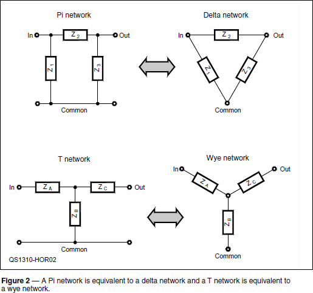
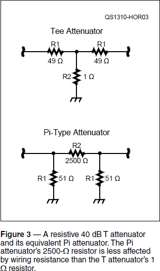

Experiment #129 — Wye-Delta and Pi-T Circuits
I didn’t realize Hands-On Radio had so many electricians and power engineers as readers! Experiment #127’s hypothetical example of three-phase power to explain how phasors operate (combined with a sloppy math error) was not intended to be a tutorial on ac wiring practices, but the references cited in the article and on the Hands-On Radio web page should clear up any confusion I unintentionally generated on this important topic.1 During the post-column post-mortem, I realized that I’d been given a golden opportunity to dig deeper into some important supporting circuit concepts and get us back to radio at the same time.
Why a Delta?
When studying three-phase power systems, you’ll soon encounter the terms wye (pronounced “why”) and delta. These refer to how the three individual phases are connected with respect to a neutral reference. Figure 1 illustrates the basic idea. The coils shown here — typical of motor or transformer windings — could also be voltage or current sources, resistors, capacitors, or generic impedances. The origin of the names for each type of system is clear — the schematics for each system take the shape of a Y or a Δ.

In a wye system, the three phases (a, b and c) all share a common neutral point, so there are four connections: Phase A, B and C (also commonly labeled Line 1, 2 and 3) and neutral. In a delta system, there is no common neutral connection because the sources or loads are connected together in a loop. That means there are only three connections and the voltages between them. (A neutral reference point can be created in a delta network through various techniques discussed in the reference articles.)
The angle between the phase voltages is always 120°, but whether the angle is positive or negative depends on the phase sequence which can be a-b-c or a-c-b in order of increasing angle. In Figure 1A, the phase sequence is a-b-c, which is positive rotation.
Say — how can three voltages be connected together in a loop that doesn’t contain any resistance and not have the current go to infinity? If the voltages were dc, we would indeed have a problem! Instead, these are ac sine waves with the same voltage magnitude (V) but different phase angles. Adding up the voltages around the circuit gives us V∠0° + V∠120° + V∠240°. Changing the phasors to rectangular coordinates allows us to calculate the sum: (V + j0) + (–0.5V + j0.866V) + (–0.5V – j0.866V) = 0. So the net voltage around the loop is zero and no circulating current flows at all!
In both wye and delta systems the loads can be connected between phase or line voltages. In a wye system, a load can also be connected between a phase voltage and neutral. Imbalanced loads in either type of system can cause substantial error currents to flow. Non-linear loads such as switchmode supplies and loads controlled by SCRs and TRIACs create harmonic currents. Both of these cause problems, too. Obviously, generating, transferring, and using multi-phase power is a complex subject. You can learn more about it in the references mentioned earlier and at www.allaboutcircuits.com/vol_2/chpt_10/1.html.
But what do wye and delta power systems have to do with radio? From the standpoint of ac power, not much — unless you happen to need a really big power supply. How- ever, we use wye and delta all the time in our circuits — we just refer to them as Pi and T!
Having T with Pi
Figure 2 shows two circuits made of generic impedances — one is a Pi network like you’ll find in nearly every tube-type amplifier and the other takes the shape of a T network that you’ll find in most antenna tuners. Figure 2 also shows how a Pi network is the same as a delta network and a T network is a wye network. Who knew?

That’s handy to know, but there is another neat trick to apply. You can turn a circuit of one type (Pi or T) into its exact equivalent circuit of the other type (T or Pi) by using some math called the wye-delta transformation. From the perspective of the input and output connections, the equivalent circuit will behave exactly the same (with a caveat explained later). The following equations show the math, although you can use an online calculator such as this one at www.elektro-energetika.cz/calculations/transfigurace.php?language=english2
Pi (Delta) to T (Wye)
ZA = Z1Z2 / ΣZ; ZB = Z1Z3 / ΣZ; ZC = Z2Z3 / ΣZ
Where ΣZ = Z1 + Z2 + Z3
T (Wye) to Pi (Delta)
Z1 = ZP / ZC, Z2 = ZP / ZB, Z3 = ZP / ZA
Where ZP = ZAZB + ZAZC + ZBZC
Using the Transformation
More than just math sleight-of-hand, transforming the circuits from one form to the other can be quite useful. Let’s say the circuit you start with has component values that are hard to make work well — maybe they are very large or very small values. By changing the circuit from one form to another, the component values also change and may become more reasonable. Let’s try an example:
The circuit in Figure 3A is a 40 dB T network attenuator with symmetrical input and output impedances of 50 Ω. The 49 Ω series resistors aren’t an issue, but the 1 Ω parallel resistance could be significantly affected by extra wiring resistance in the common con- nection. Transforming the circuit into its Pi equivalent in Figure 3B changes the resistors to 51 and 2500 Ω. The 2500 Ω resistance is much less affected by wiring resistance and other small variations. You can use an online calculator such as www.microwaves101.com/encyclopedia/calcattenuator.cfm or tables of resistor values for Pi and T attenuators allow you to pick the form that makes the most sense.3

This can also work with circuits made out of reactances (Ls and Cs). Let’s try an example in which we are transforming an output im- pedance of 800 Ω to 50 Ω at a frequency of 7 MHz and with a circuit Q of 6. If we use a typical antenna tuner’s T network with series capacitors and a parallel inductor, the component values are CIN = 76 pF, L = 5.9 μH, and COUT = 25 pF (calculated with the T match calculator at www.eeweb.com/toolbox/t-match). The value of L is fine but the values for CIN and COUT are small enough that it would not take much stray capacitance to upset the tuning of the network which makes the settings “touchy.” In addition, the higher the reactances of the series capacitors (–j300 and –j910 Ω, respectively) the higher the voltages across them for a given current.
What happens if the T (wye) network is transformed to a Pi (delta) network? The resulting reactances are arranged with a shunt (parallel) inductor at the input (j 44 Ω or 1 μH) and output (j 132 Ω or 3 μH) and a larger series capacitor (–j155 Ω or 147 pF) which would reduce the effect of stray capa- citance and lowers series reactance, too. The online calculator can also change the Pi net- work to a series-L form if that’s more convenient.4
Here’s the caveat mentioned earlier: When using LC networks it’s important to remember that when using LC networks, the transformation works only at the frequency for which the components have the reactances you specify. As frequency changes, so do the reactances, and you’ll have to re-calculate the component values to get an exactly equivalent circuit. Using variable components allows you to use the circuit at different frequencies.
Putting the transformation calculators in your software toolbox is very helpful when you are trying to select and design an impedance matching circuit. This is particularly true at QRO power levels where heavy-duty (i.e. expensive) components are required to stand up to the high voltages and currents. A few iterations of your design over the range of frequencies and impedances you want helps avoid extreme component values and the high voltages and currents that often go with them.
References
1All previous Hands-On Radio experiments are available to ARRL members at www.arrl.org/hands-on-radio.
2Step 1 of the calculator asks for the “Shape of the complex numbers,” meaning that you should select either rectangular (R + jX) or phasor (Z∠θ) form for the impedances. Use a comma for the decimal in the European convention. i.e. 1.0 becomes 1,0.
3See the Component Data and References chapter of the ARRL Handbook, available from your ARRL dealer, or from the ARRL Store, ARRL order no. 6948. Telephone toll-free in the US 888-277-5289, or 860-594-0355; fax 860-594-0303; www.arrl.org/shop/; pubsales@arrl.org.
4The calculator can switch between series-C (block dc current) and series-L (pass dc current) forms of the network.